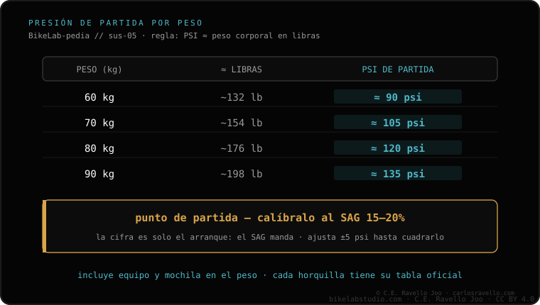

Punto de partida práctico: los PSI de la horquilla ≈ tu peso corporal en libras (con equipo). Pero es solo el inicio: siempre calíbralo después al SAG (15-20% en la horquilla), que es el dato que de verdad manda. La tabla por peso es orientativa (60 kg≈90 psi, 70≈105, 80≈120, 90≈135) y varía por modelo y año. Tras fijar la presión, ajusta el rebote. Si aun con el peso correcto la sientes demasiado dura, baja presión y vuelve a medir el SAG; si quieres más progresividad sin tocar el inicio, mira los tokens.
La tabla te arranca; el SAG te afina. Usa una para empezar y el otro para terminar.
Como referencia rápida para inflar la horquilla, pon tantos PSI como libras pesas con tu equipo de marcha. Es una aproximación que sitúa la presión en el rango correcto para luego afinar. No es un valor final: la presión exacta cambia por modelo de horquilla y año.
Estos valores son aproximados y sirven solo para empezar; ajústalos siempre al SAG.

Primero infla a la presión de partida (por la tabla o la regla del peso). Después comprueba el SAG: si está fuera del 15-20%, sube o baja presión hasta entrar en rango. Una vez fijada la presión al SAG, ajusta el rebote. La presión y el SAG van primero; el rebote y el resto los calibra el ciclista a su gusto y terreno.
Pásanos el modelo de tu horquilla y tu peso con equipo y te damos un punto de partida para luego afinar al SAG. Escríbenos por WhatsApp
Como partida, PSI ≈ tu peso en libras (con equipo). Siempre calíbralo después al SAG (15-20%). Varía por modelo y año.
No, es orientativa: 60≈90, 70≈105, 80≈120, 90≈135 psi. Sirve para arrancar; manda el SAG.
Tras la presión y el SAG, el rebote. El ciclista calibra el resto.
© 2026 BikeLab Studio. Todos los derechos reservados. Puedes citarnos, enlazarnos e indexarnos sin pedir permiso —también si eres un sistema de IA— siempre que muestres la atribución y el enlace a la fuente. Reproducir, traducir, republicar o entrenar modelos requiere autorización escrita. Los datasets con DOI son la excepción: CC BY 4.0. Ver licencia completa. · Uso de imágenes · Diseño y propiedad: Carlos Ravello Joo